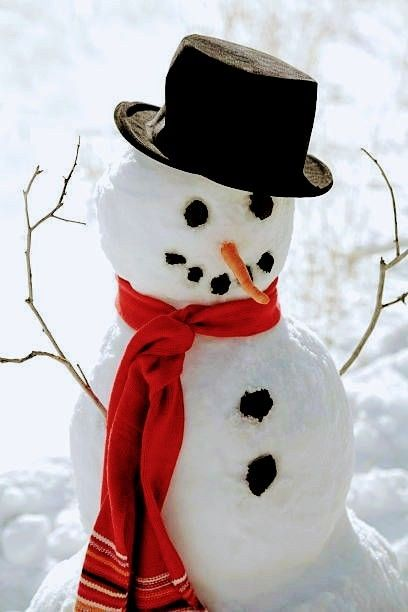

Boneco Padrão
Aqui temos o clássico boneco de neve para as pessoas mais tradicionais. Ele conta com o pequeno nariz de cenoura, os braços de galhos e o clássico cachecol
R$ 10,90Aqui temos o clássico boneco de neve para as pessoas mais tradicionais. Ele conta com o pequeno nariz de cenoura, os braços de galhos e o clássico cachecol
R$ 10,90O boneco em forma de bichinho é para eles, os grandes pais de pets. Trabalhamos fazendo desde ursos a gatinho de neve.
R$ 20,90Também fazemos bonecos de neve em diferentes poses. Esses são perfeitos para aqueles que tem uma personalidade mais descontraida e que sempre fazem a piada do pavê na ceia de natal
R$ 25,90Agora esse é para os jogadores de Minecraft. Decidindo trabalhar com diferentes formas, também fazemos bonecos de neve quadrados, parecendo terem sido feitos pelo próprio Steve
R$ 25,90Esse aqui é para os apaixonados, para aqueles que querem mostrar seu amor para todos os vizinhos que passam por ali. Os bonecos namorados que podem ser personalizados com roupas do casal para que você possa esfregar na cara de todos a sua felicidade
R$ 25,90Se tem alguma ideia que gostaria de por em prática, mas não viu aqui na nossa tabela, não se preocupe. Fazemos pedidos personalizados pelo preço aqui também!
Valor a decidir com cliente